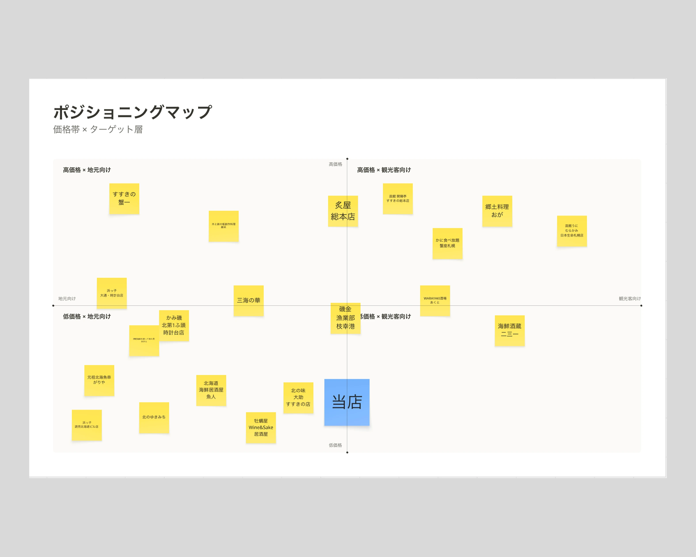
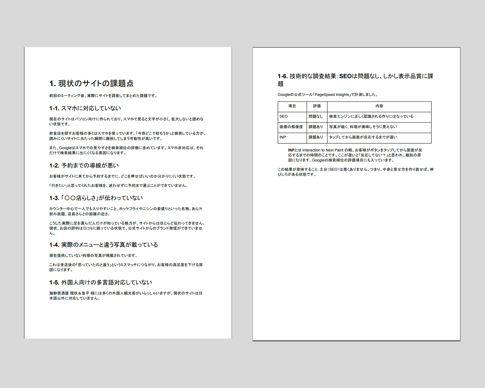

クライアント様 サイトリニューアル(制作途中）
- #クライアントワーク
- #Webデザイン
私が、働いているアルバイト先のWebサイトをリニューアルしています。
デザインの刷新だけでなく、現状のサイトの課題を洗い出し、リニューアルをする事の効果を分析した上で、制作しています
使っているソフト
Figma
Illustrator
miro
制作期間
製作中
メンバー
デザイナー
プログラマー
担当した役割
デザイナー
Target
一人で出張に来た40~50代のサラリーマンと旅行に来た外国人観光客。
私の働いている知見として、出張客としてくるお客様の割合が高く、他店との差別化ポイントであるカウンターのある海鮮居酒屋を打ち出し、ターゲットを40~50代のサラリーマンとすることで、新規顧客獲得見込めるのではないかと推測しました。
また、価格帯 × ターゲット層のポジショニングマップを使用した結果、低価格 × 観光客向けのスペースが空いており、多言語対応のしたリニューアルをすることにより、外国人観光客がくると考えました。

Issue
SEO自体に問題はありませんでしたが、サイト更新日が７年前ということがあり、使われている料理の写真が現在提供している食べ物とは、違うものが使われている現状課題がありました。

Concept
昔ながらの温もりがある居酒屋〇〇店
昔から地元から愛されている老舗居酒屋という側面をサイト上で伝えるべきだと考えました。